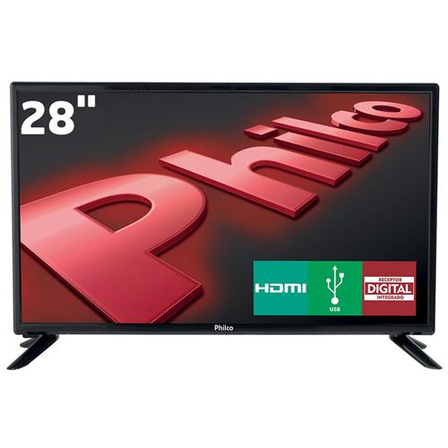
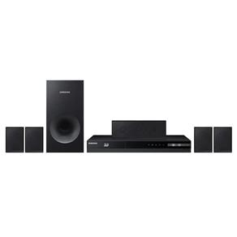
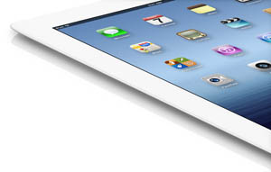

TV LED 28" HD Philco PH28D27D com Conversor Digital Integrado, Progressive Scan, Entradas HDMI e Entrada USB
Postado em 12 de Dezembro 2016
Detalhes do produto: Philco: TV LED 28" HD Philco PH28D27D com Conversor Digital Integrado, Progressive Scan, Entradas HDMI e Entrada USB Você merece a melhor qualidade de imagem na sua casa! A TV LED 28" HD Philco PH28D27D possui conversor digital integrado para você curtir seus programas preferidos da TV Aberta com melhor definição de imagem e som. Suas funções são essenciais para maior conforto e praticidade, por exemplo, o Sleep Timer ajusta o desligamento automático da TV após o tempo no tempo programado oferecendo facilidade e economia de energia. Além disso, conta com entrada USB para acessar seus arquivos no dispositivo e HDMI, ideal para conectar outros eletrônicos como aparelhos de blu-ray e videogames. Clique e confira o manual disponível do produto e tire todas as dúvidas
Postado por Thais GrazieleHome Theater Samsung HT-F5505K/ZD 5.1 Canais com Blu-ray 3D, Função Futebol, Karaokê, Bluetooth, Entrada USB, Cabo HDMI e Lê DVD – 1000 W
Postado em 12 de Dezembro 2016
Detalhes do produto: Samsung: Home Theater Samsung HT-F5505K/ZD 5.1 Canais com Blu-ray 3D, Função Futebol, Karaokê, Bluetooth, Entrada USB, Cabo HDMI e Lê DVD – 1000 W Home Theater Samsung Sinta toda qualidade de som Se engana quem pensa que um home theater é um aparelho reservado apenas aos amantes do cinema. Um sistema de som é capaz de transformar a sua sala em um ambiente próprio para shows, partidas de futebol e diversão entre amigos. Quer ver como? A Samsung apresenta o seu Home Theater HT-F5505K/ZD, de 5.1 canais e 1000 watts de potência, recheado com as tecnologias mais avançadas para uma experiência inesquecível de áudio. Prepare-se para um som surround providenciado pelas cinco caixas e pelo subwoofer deste equipamento que vai fazer você pensar como se divertiu até agora sem.
Postado por Thais GrazieleNovo iPad: As novidades do novo tablet da Apple
Postado em 12 de Dezembro 2016
Que a Apple lançou seu o novo iPad no início de março, todos devem saber, mas e quanto às novidades? Será que devemos esperar para comprar o novo modelo ou o iPad 2 ainda vale a pena? Bom, vamos responder a essas perguntas. No dia 7 de março, a Apple apresentou o novo iPad, a terceira geração do tablet mais famoso do mundo. Ele não trouxe nenhuma grande mudança na aparência e por isso mesmo muita gente se pergunta se ele mudou tanto assim para valer a pena trocar de iPad. Ele mudou sim. Realmente, na aparência continua o mesmo, mas no seu interior e no seu poder de processamento, ele ganhou um excelente upgrade. Para um usuário que não exija tanto assim em desempenho, talvez ainda não seja o momento de trocar, mas para quem gosta de novidades e de ter sempre o melhor hardware possível, o novo iPad é ideal.
Postado por Thais Graziele